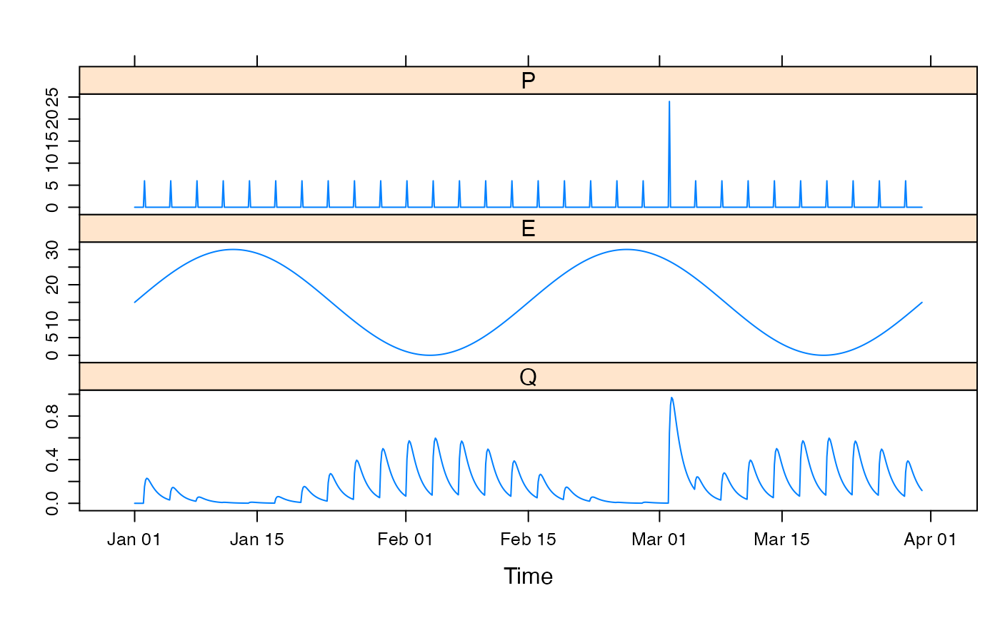

R/HydroTestData.R
HydroTestData.RdA simple simulated dataset for use in testing hydrological models.
HydroTestDataA zooreg object with 730 (365 * 2) time steps.
There are three columns, P (simulated areal rainfall, mm/day),
E (simulated temperature, degrees Celcius) and Q (simulated
streamflow, mm/day).
a regular series of impulses (every 20 time steps). Each of these pulses have a value of 5, except one which has a value of 20.
a sine wave ranging from 0 to 30.
proportional to the square of rainfall and inversely
to temperature, then filtered with a second-order autoregressive
filter.
data(HydroTestData)
summary(HydroTestData)
#> Index P E
#> Min. :2000-01-01 00:00:00 Min. : 0.0000 Min. : 0.000
#> 1st Qu.:2000-01-23 12:00:00 1st Qu.: 0.0000 1st Qu.: 4.393
#> Median :2000-02-15 00:00:00 Median : 0.0000 Median :15.000
#> Mean :2000-02-15 00:00:00 Mean : 0.2746 Mean :15.000
#> 3rd Qu.:2000-03-08 12:00:00 3rd Qu.: 0.0000 3rd Qu.:25.607
#> Max. :2000-03-31 00:00:00 Max. :24.0000 Max. :30.000
#> Q
#> Min. :0.00000
#> 1st Qu.:0.03738
#> Median :0.11074
#> Mean :0.16502
#> 3rd Qu.:0.24330
#> Max. :0.97010
xyplot(HydroTestData)
